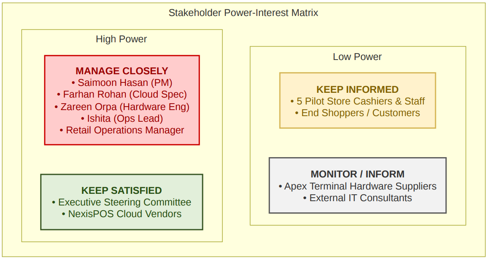

Group 02 – BISY2004 Project Management, Assessment 2
The charter authorises Group 02 to migrate five pilot retail stores to the NexisPOS cloud platform with a total approved budget of $106,986, under the governance of the Executive Steering Committee and with the Retail Operations Manager as business sponsor. Saimoon Hasan is appointed Project Manager with authority to assign team resources, raise change requests and draw on the $12,686 contingency reserve within the approved budget ceiling. Charter sign-off is recorded as work package 1.1 and was completed on 30 August 2026.
| Objective | Success measure | Verified by |
|---|---|---|
| Migrate five pilot stores to NexisPOS Cloud | All five stores trading on the cloud platform | Milestone M4, 17 September 2026 |
| Protect transaction and inventory data | 100% record match, zero data loss | Dual-audit reconciliation, WP 3.2 |
| Improve checkout performance | Transaction completed in under two seconds | Timed UAT transactions, WP 3.3 |
| Prepare store staff for the new platform | All pilot-store cashiers certified | Milestone M3, 16 September 2026 |
| Deliver within approved funding | Total spend at or under $106,986 | Budget log, categories CAT-01 to CAT-05 |
Assumptions
Constraints
| Stakeholder | Interest in the project | Power | Interest | Engagement strategy |
|---|---|---|---|---|
| Project team (Saimoon, Farhan, Zareen, Ishita) | Deliver the migration on time and on budget | High | High | Manage closely |
| Retail Operations Manager | Trading continuity and staff readiness in the pilot stores | High | High | Manage closely |
| Executive Steering Committee | Budget control and the enterprise rollout decision | High | Low | Keep satisfied |
| NexisPOS cloud vendors | Licensing, platform support and service levels | High | Low | Keep satisfied |
| Pilot store cashiers and staff | Daily use of the new terminals | Low | High | Keep informed |
| End shoppers and customers | Faster and more reliable checkout | Low | High | Keep informed |
| Apex terminal hardware suppliers | Fulfilment of the hardware order | Low | Low | Monitor |
| External IT consultants | Specialist input during cutover | Low | Low | Monitor |

Only five stakeholders sit in the high-power band, and two of them – the Steering Committee and the NexisPOS vendors – have low day-to-day interest. Engagement effort was therefore concentrated rather than spread evenly: daily stand-ups for the manage-closely group, and a bi-weekly summary for the keep-satisfied group covering budget, milestones and risk exposure only.
The more useful result came from the bottom-right quadrant. Pilot store cashiers have high interest in the change but no authority over it, which is the classic profile for adoption resistance. That classification is the reason risk R2 (staff resistance) was raised against a group that had no formal role in the project, and the reason its response was hands-on dry-run simulations rather than a written announcement. The full schedule of who is told what, and how often, is set out in the communication plan.